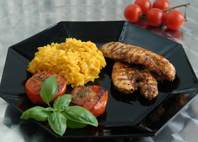

| Zutaten für 2 Personen: | |
| 240 g | Pouletbrust |
| wenig | Gewürzmischung für Geflügel |
| Pfeffer | |
| 2 | Tomaten |
| 10 g | Italienische Kräuter, frisch, gehackt |
| 1 | Eschalotte oder Zwiebel |
| 125 g | Risotto-Reis |
| 1/4 dl | Weisswein |
| 2 dl | Gemüsebouillon |
| 1 Brief | Safranpulver |
| 10 g | Parmesan, gerieben |
| Meersalz | |
Zubereitungszeit: 60 Minuten (wenn man herum trödelt und nicht viel Hunger hat....)
Die Tomaten haben am längsten. Folglich die Grillpfanne einheizen, den Strunk herausschneiden und die Tomaten halbieren. Tomatenhälften salzen und mit der Schnittfläche nach unten in der Grillpfanne braten.
Die Eschalotte (oder Zwiebel) fein hacken und mit dem Risotto-Reis andünsten.
Mit Weisswein ablöschen und immer wieder Gemüsebouillon zugeben, bis der Reis die gewünschte Garstufe erreicht hat.
Safran beigeben.
Die Pouletbrüstchen mit Geflügelwürzmischung, Pfeffer und Salz würzen und in der Grillpfanne braten.
Die Tomatenhälften mit Italienischen Kräutern bestreuen.
Den Risotto kurz vor Schluss mit Parmesan verfeinern.
Pro Person: 442 Kalorien (464g)
eBalance
Schmeckt hervorragend! RE Jan 2013
@LINKBACK_TAG@ @WAKELOCK@